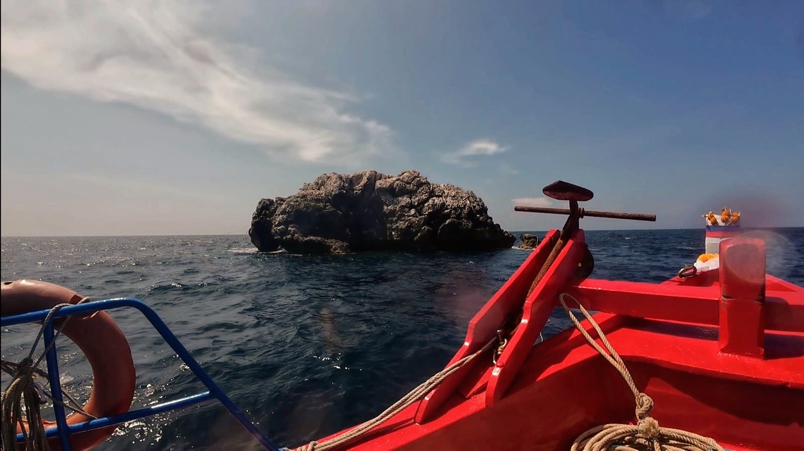
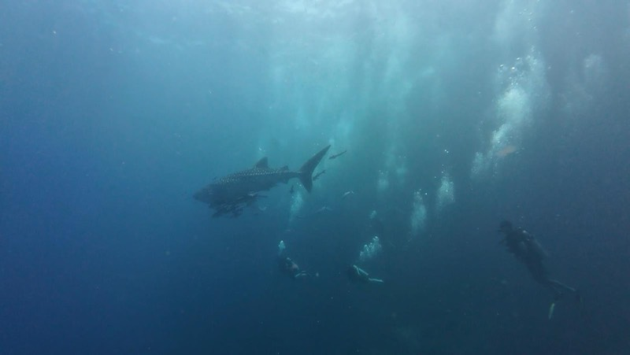
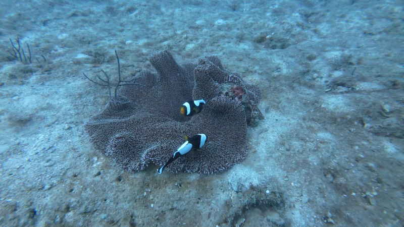
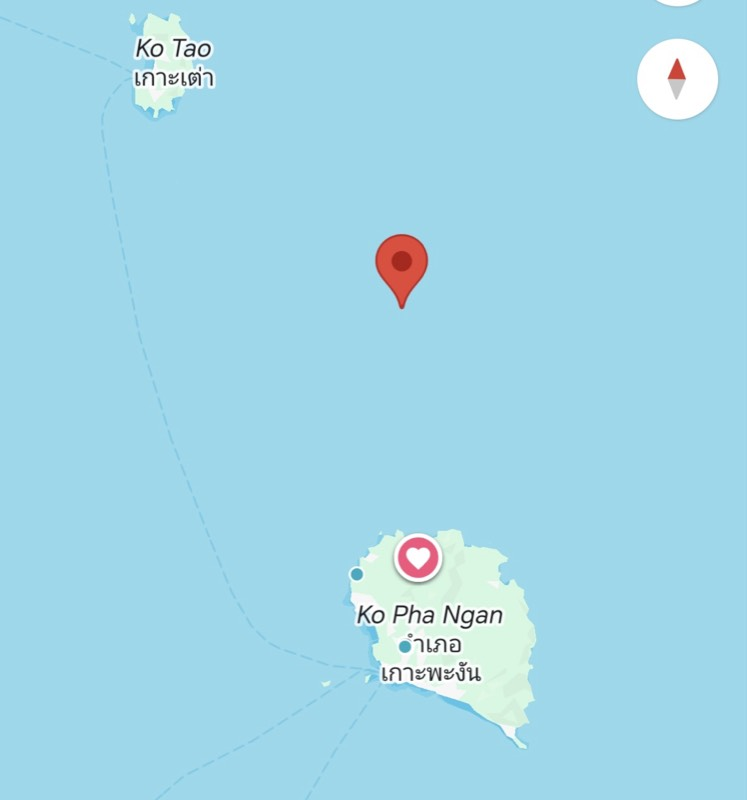

Start / Tauchplätze
Tauchplätze auf Koh Phangan
und Sail Rock
Tägliche Abfahrt um 9:30 ab Chaloklum, in kleinen Gruppen, auf unserem eigenen Boot. Vier Tauchplätze, alle vom selben Pier aus erreichbar — und wenn die Bedingungen es erlauben, schaffen brevetierte Taucher mehr als einen davon an einem Tag.

Sail Rock · 5–40 m · eine Stunde Fahrt
Alle Stufen · Anfänger bis Fortgeschrittene
Sail Rock
Die berühmte Felsspitze im offenen Meer und der Grund, warum Taucher auf diese Seite des Golfs kommen. Sie steigt aus 40 Metern Tiefe bis über die Oberfläche, und ein senkrechter Tunnel — The Chimney — führt mitten durch sie hindurch. Schwärme von Barrakudas und Fledermausfischen stehen im Blau vor den Wänden, und mit Glück kommt ein Walhai vorbei.
Es ist der beste Tauchplatz im Golf von Thailand und ein Muss. Weil wir um 9:30 ablegen, kommen wir meist an, wenn die frühen Boote gerade fahren.
- Tiefe
- 5–40 m
- Fahrt
- 1 Stunde
- Stufe
- Alle
- Strömung
- Wechselnd
- Klarste Zeit
- Mai–Okt
- The Chimney — ein senkrechter Durchtauchtunnel
- Schwärme von Barrakudas und Fledermausfischen
- Walhaie, saisonal und mit Glück
- Hier finden Open-Water-Ausbildungstauchgänge statt

Koh Ma · 5–18 m · ohne Strömung
Anfänger · Try Dives · Open-Water-Kurse
Koh Ma
Zehn Minuten mit dem Boot von Chaloklum, ohne Strömung und mit einem wirklich gesunden Hartkorallengarten. Grüne Meeresschildkröten weiden hier, Anemonenfische bewachen ihre Anemonen, und Sepien schweben über dem Sand und beobachten dich, während du sie beobachtest. Hier passiert dein erster perfekter Tauchgang.
- Tiefe
- 5–18 m
- Fahrt
- 10 Min.
- Stufe
- Anfänger
- Strömung
- Keine
- Klarste Zeit
- Jan–Jun
- Grüne Meeresschildkröten
- Anemonenfische und Anemonen
- Sepien über dem Sand
- Gesunde Hartkorallen

Little Sail Rock · 8–20 m
Mittelstufe bis Fortgeschrittene · mögliche Strömung
Little
Sail Rock
Eine Miniaturausgabe von Sail Rock, zehn Minuten östlich von Chaloklum. Viel weniger Taucher kommen hierher, und es gibt genauso viel Leben — Riesenzackenbarsche unter den Überhängen, Muränen in den Spalten und Füsilierschwärme über dem Gipfel. Das versteckte Juwel, um den Massen zu entkommen.
- Tiefe
- 8–20 m
- Fahrt
- 10 Min.
- Stufe
- Mittelstufe
- Strömung
- Möglich
- Klarste Zeit
- Jan–Jun
- Riesenzackenbarsche
- Muränen
- Füsilierschwärme
- Selten voll

Oil Platform · 10–30 m · 20+ Tauchgänge
Nur Fortgeschrittene · 20+ geloggte Tauchgänge
Oil
Platform
Eine künstliche Struktur allein im offenen Wasser, deren Beine ins Blau abfallen. Alles in der Umgebung sucht hier Schutz, also tauchst du ab in riesige Schwärme von Stachelmakrelen und Barrakudas, darunter parken Zackenbarsche. Es ist der außergewöhnlichste Tauchgang im Golf, mit dem meisten Adrenalin.
Wegen der Tiefe und des offenen Wassers ringsum ist dieser Platz für fortgeschrittene Taucher mit mindestens 20 geloggten Tauchgängen.
- Tiefe
- 10–30 m
- Stufe
- Fortgeschritten
- Voraussetzung
- 20+ Tauchgänge
- Typ
- Struktur
- Riesige Schwärme von Stachelmakrelen
- Barrakudas in großer Zahl
- Zackenbarsche unter den Beinen
- Neben Sail Rock der Liebling unserer Gäste
Auf der Karte
Alles von
einem Pier aus
Wir starten in Chaloklum an der Nordküste von Koh Phangan — dem nächstgelegenen genutzten Pier zu Sail Rock, das im offenen Meer zwischen Koh Phangan und Koh Tao liegt.

Sail Rock · offenes Meer, eine Stunde Fahrt
Welcher Tauchplatz
passt zu dir?
Sag uns dein Niveau, und wir sagen dir, wohin es an diesem Tag gehen sollte. Die Bedingungen ändern sich, und die ehrliche Antwort lautet manchmal: „Heute nicht Sail Rock.“
Jahreszeiten rund um Koh Phangan
Wann ist die beste Zeit zum Tauchen an Sail Rock?
An Sail Rock kann man das ganze Jahr tauchen. Am klarsten ist es etwa von Mai bis Oktober, oft mit 20–30 m Sicht. Von Januar bis April trägt das Wasser mehr Plankton, und die Sicht liegt eher bei 5–10 m — aber dieses Plankton ernährt die riesigen Fischschwärme und lockt die Walhaie an, es ist also auf andere Art gut.
Wann ist die Sicht an Koh Ma und Little Sail Rock am besten?
Von Januar bis etwa Mai oder Juni. Die näheren Tauchplätze sind genau dann am klarsten, wenn Sail Rock am planktonreichsten ist — einer der Gründe, warum wir die Route jeden Morgen nach den Bedingungen wählen.
Wann ist Walhai-Saison an Sail Rock?
Die klassische Saison ist April bis Juni, aber Walhaie haben ihren eigenen Kalender: Wir hatten auch im Februar und September tolle Begegnungen. Niemand kann eine Begegnung versprechen, und genau das gehört zum Zauber.
Wie warm ist das Wasser?
28–30 °C das ganze Jahr. Wir stellen Neoprenanzüge in den Größen XS bis XXL.
Schließt ihr während des Monsuns?
Wir haben das ganze Jahr geöffnet. Der Monsun kommt ungefähr von November bis Mitte Dezember. An Tagen, an denen das Meer zu rau ist, um sicher rauszufahren, sagen wir die Ausfahrt ab, und wenn du gebucht hattest, bekommst du dein Geld vollständig zurück.